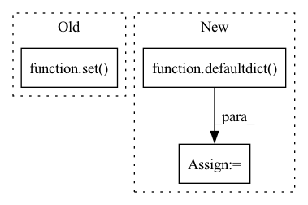

Pattern ID :38139
Before Change
tokens = tokens[1:]
tokens.append(sent[i + ngram - 1])
ngram_pool.append(" ".join(tokens))
return len(set( ngram_pool) ) / len(ngram_pool)
def _calc_dist_info(self, generate_corpus):
rget metrics resultAfter Change
self.n_grams = [1, 2, 3, 4]
def dist_func(self, generate_sentence, ngram):
ngram_dict = defaultdict( int)
tokens = generate_sentence[:ngram]
ngram_dict[" ".join(tokens)] += 1
for i in range(1, len(generate_sentence) - ngram + 1):
tokens = tokens[1:]
tokens.append(generate_sentence[i + ngram - 1])
ngram_dict[" ".join(tokens)] += 1
return ngram_dict
def _calc_metrics_info(self, generate_corpus, reference_corpus=None):In pattern: SUPERPATTERN
Frequency: 3
Non-data size: 3
Instances Fragment ID: 109338214
Project Name: rucaibox/textbox
Commit Name: e4fe6d053c45d18704007c0ef18c340a2e5e935a
Time: 2021-04-24
Author: 602525931@qq.com
File Name: textbox/evaluator/distinct_evaluator.py
M Class Name: DistinctEvaluator
N Class Name: DistinctEvaluator
M Method Name: dist_func(3)
N Method Name: dist_func(3)
M Parent Class: AbstractEvaluator
N Parent Class:
M File Name: textbox/evaluator/distinct_evaluator.py
N File Name: textbox/evaluator/distinct_evaluator.py
M Start Line: 45
M End Line: 53
N Start Line: 32
N End Line: 39
Before Change
class IndicatorCollectorPipeline:
def __init__(self):
self.ids_seen = set()
def process_item(self, item, spider):
indicators.append(item)
After Change
def __init__(self, producer, topic):
self.producer = producer
self.topic = topic
self.items_dict = defaultdict()
try:
with open(r"items.pickle", "rb") as output_file:
self.prev_items = pickle.load(output_file) Fragment ID: 109338220
Project Name: radoslawkrolikowski/financial-market-data-analysis
Commit Name: 00f584045cdbb48c22007e66bd89ccbb5b6a1163
Time: 2019-12-09
Author: root@localhost.localdomain
File Name: economic_indicators_spider.py
M Class Name: IndicatorCollectorPipeline
N Class Name: IndicatorCollectorPipeline
M Method Name: __init__(3)
N Method Name: __init__(1)
M Parent Class:
N Parent Class:
M File Name: economic_indicators_spider.py
N File Name: economic_indicators_spider.py
M Start Line: 92
M End Line: 93
N Start Line: 16
N End Line: 30
Before Change
// Add edges
for target_torch_node in torch_graph.nodes():
target_inputs = [i.unique() for i in target_torch_node.inputs()]
if set(outputs) & set( target_inputs) :
self.add_edge_by_id(pytorch_id(torch_node), pytorch_id(target_torch_node))
for node in self.nodes.values():After Change
// Loop through nodes from torch_graph to build graph for OTO
torch_nodes_by_inputs = defaultdict(set)
torch_nodes_by_outputs = defaultdict( set)
total_nodes = len(list(torch_graph.nodes()))
for torch_node in tqdm.tqdm(torch_graph.nodes(), total=total_nodes):
// Get Operation
op_name = torch_node.kind().split("::")[-1].lower() Fragment ID: 109338223
Project Name: tianyic/only_train_once
Commit Name: 8964b4864797b33c8d00be314d76976237455448
Time: 2023-04-07
Author: 0xloem@gmail.com
File Name: only_train_once/graph/graph.py
M Class Name: Graph
N Class Name: Graph
M Method Name: build(3)
N Method Name: build(3)
M Parent Class:
N Parent Class:
M File Name: only_train_once/graph/graph.py
N File Name: only_train_once/graph/graph.py
M Start Line: 194
M End Line: 231
N Start Line: 196
N End Line: 241